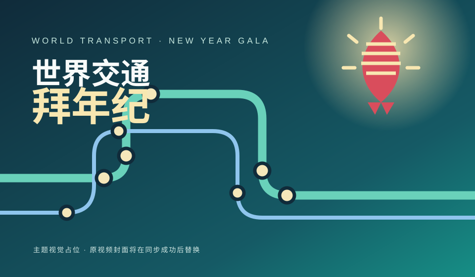

2025 · FULL REPLAY▶WORLD TRANSPORT NEW YEAR GALA 交通爱好者共同企划
世界交通
拜年纪
让世界交通，在新春相逢。
从城市轨道到铁路干线，从车站与列车到每一段奔赴远方的旅程——用作品记录交通，用新春祝福连接每一份热爱。
AN ANNUAL GATHERINGTRANSIT · RAIL · COMMUNITY
WTRANSPORT
连接世界
WTBNJ ／ 2025—
以交通为题以热爱相聚从世界各地送来新春祝福 ↘
01 / THE TEAM关于团队
团队主题标识
BILIBILI CREATOR SPACE
世界交通拜年纪
UID / MID 3546601293351293
以交通为题，以热爱相聚。通过年度拜年纪与相关投稿，记录全球交通的多样风景。
查看 B 站主页 ↗A GATHERING OF TRANSPORT ENTHUSIASTS
线路连接城市，
作品连接你我。
「世界交通拜年纪」是一个围绕交通主题展开的新春企划。我们希望借助视频、合集与社区动态，呈现不同地区的铁路、城市轨道交通及公共交通文化，在辞旧迎新的时刻，让来自不同地方的交通爱好者彼此看见。
团队空间中的头像、简介和最新投稿会尝试通过 B 站公开页面/接口同步。如果平台暂时限制访问，本站会保留最近一次成功同步的数据与原始入口。
当前展示已核实的公开作品与本地主题标识；B 站实时资料将在 GitHub Actions 同步成功后更新。
02 / FOLLOW THE GALA官方平台入口
关注团队的
每一次更新。
主页、投稿、合集与动态均指向你提供的 B 站官方空间地址；点击可查看最新内容。
03 / VIDEO WORKS视频作品
以作品为媒，
分享交通之美。
卡片优先展示本地缓存的标题与封面。首次同步前会显示主题视觉占位图，不将占位图冒充原视频封面。
没有找到匹配的作品，试试输入 BV 号或更短的关键词。
更多投稿持续补充
查看完整投稿列表 ↗同步流程会尝试读取最近的公开投稿，并将成功获取的封面保存为本站本地图片。
OUR SPIRIT新春寄语
山海各有轨，热爱自相逢。
愿每一程出发，都有抵达；愿每一份热爱，都被听见。
世界交通拜年纪让交通连接世界，让祝福跨越山海。